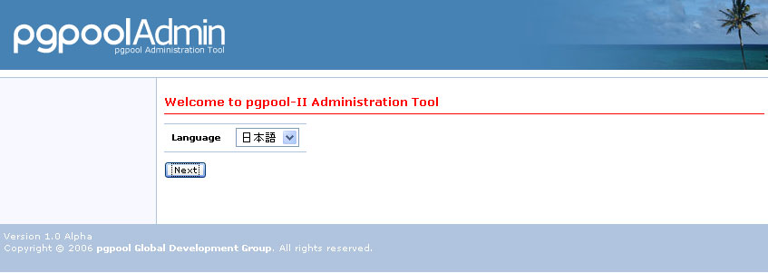
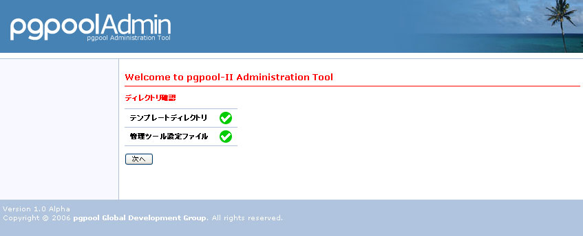
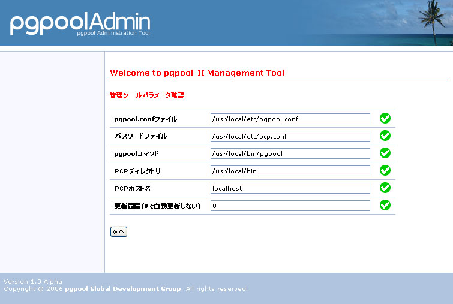
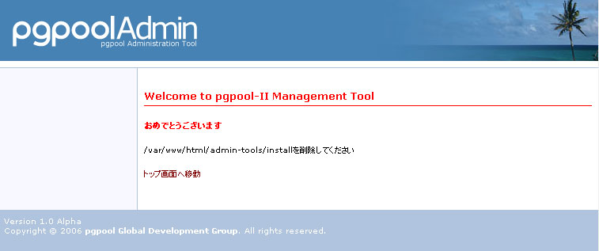

pgpool管理ツールインストール方法
はじめに
pgpool管理ツールのインストールを始める前に、pgpoolが正常にインストールでき、稼動することを確認してください。 pgpool管理ツールをインストールする場合、少なくとも以下のソフトウェアがpgpoolが稼動するサーバにインストールされていて、正常に動く必要があります。- HTTPサーバ(Apache)
- PHP 5.6.0以上
- pgpool
- HTTPサーバ、PHP、pgpoolを適切にセットアップする。
- pgpoolAdmin のログインユーザと同名の PostgreSQL ユーザをバックエンドのスーパユーザとして作成する。
- ブラウザのクッキーとJavaScriptを有効にする。
前提条件
ここでは以下のように設定してあることを前提として説明します。| /var/www/html | |
| apache | |
| /var/www/html/admin-tool | |
| /usr/local/bin/pgpool | |
| /usr/local/bin/pcp_attach_node | |
| /usr/local/bin/pcp_detach_node | |
| /usr/local/bin/pcp_node_count | |
| /usr/local/bin/pcp_node_info | |
| /usr/local/bin/pcp_proc_count | |
| /usr/local/bin/pcp_proc_info | |
| /usr/local/bin/pcp_stop_pgpool | |
| /usr/local/bin/pcp_systemdb_info | |
| /usr/local/bin/pcp_watchdog_info | |
| /usr/local/bin/pg_md5 | |
| /usr/local/etc/pgpool.conf | |
| /usr/local/etc/pcp.conf |
インストール
以下に手順をおって、管理ツールのインストールを説明します。- セットアップしたpgpoolおよびpcpツールをApachユーザから実行できるようにアクセス権を設定します。
- pgpool
- pcp_attach_node
- pcp_detach_node
- pcp_node_count
- pcp_node_info
- pcp_proc_count
- pcp_proc_info
- pcp_stop_pgpool
- pcp_systemdb_info
- pcp_watchdog_info
- pg_md5
-
pcp.confファイルにログインユーザの登録を行います。最初にパスワードをmd5化した文字列を取得します。
次に、取得した文字列をpcp.confに
pg_md5 パスワード文字列 ユーザ名:md5化したパスワード
の行を追加します。 -
管理ツールプログラムadmin-tool.tar.gzをApacheのhtmlディレクトリ以下に展開します。
mv admin-tool.tar.gz /tmp cd /tmp tar xzf admin-tool.tar.gz mv admin-tool /var/www/html rm admin-tool.tar.gz -
ファイルを確認します。
find /var/www/html/admin-tool -print /var/www/html/admin-tool /var/www/html/admin-tool/install /var/www/html/admin-tool/install/finish.php /var/www/html/admin-tool/install/defaultParameter.php /var/www/html/admin-tool/install/setLang.php /var/www/html/admin-tool/install/checkDirectory.php /var/www/html/admin-tool/install/images /var/www/html/admin-tool/install/images/Thumbs.db /var/www/html/admin-tool/install/images/ng.gif /var/www/html/admin-tool/install/images/ok.gif /var/www/html/admin-tool/install/index.php /var/www/html/admin-tool/install/checkParameter.php /var/www/html/admin-tool/install/lang /var/www/html/admin-tool/install/lang/ja.lang.php /var/www/html/admin-tool/install/lang/en.lang.php /var/www/html/admin-tool/libs /var/www/html/admin-tool/libs/Smarty.class.php /var/www/html/admin-tool/libs/plugins /var/www/html/admin-tool/libs/plugins/function.counter.php /var/www/html/admin-tool/libs/plugins/modifier.escape.php /var/www/html/admin-tool/libs/plugins/modifier.replace.php /var/www/html/admin-tool/libs/plugins/modifier.count_characters.php /var/www/html/admin-tool/libs/plugins/block.textformat.php /var/www/html/admin-tool/libs/plugins/modifier.spacify.php /var/www/html/admin-tool/libs/plugins/modifier.date_format.php /var/www/html/admin-tool/libs/plugins/modifier.regex_replace.php /var/www/html/admin-tool/libs/plugins/modifier.lower.php /var/www/html/admin-tool/libs/plugins/modifier.debug_print_var.php /var/www/html/admin-tool/libs/plugins/function.eval.php /var/www/html/admin-tool/libs/plugins/function.html_image.php /var/www/html/admin-tool/libs/plugins/modifier.nl2br.php /var/www/html/admin-tool/libs/plugins/modifier.strip_tags.php /var/www/html/admin-tool/libs/plugins/outputfilter.trimwhitespace.php /var/www/html/admin-tool/libs/plugins/function.assign_debug_info.php /var/www/html/admin-tool/libs/plugins/modifier.strip.php /var/www/html/admin-tool/libs/plugins/shared.make_timestamp.php /var/www/html/admin-tool/libs/plugins/function.html_select_date.php /var/www/html/admin-tool/libs/plugins/modifier.truncate.php /var/www/html/admin-tool/libs/plugins/compiler.assign.php /var/www/html/admin-tool/libs/plugins/modifier.capitalize.php /var/www/html/admin-tool/libs/plugins/modifier.wordwrap.php /var/www/html/admin-tool/libs/plugins/modifier.indent.php /var/www/html/admin-tool/libs/plugins/function.html_checkboxes.php /var/www/html/admin-tool/libs/plugins/shared.escape_special_chars.php /var/www/html/admin-tool/libs/plugins/function.cycle.php /var/www/html/admin-tool/libs/plugins/function.math.php /var/www/html/admin-tool/libs/plugins/modifier.cat.php /var/www/html/admin-tool/libs/plugins/function.html_select_time.php /var/www/html/admin-tool/libs/plugins/function.html_options.php /var/www/html/admin-tool/libs/plugins/function.fetch.php /var/www/html/admin-tool/libs/plugins/modifier.count_paragraphs.php /var/www/html/admin-tool/libs/plugins/function.config_load.php /var/www/html/admin-tool/libs/plugins/function.popup_init.php /var/www/html/admin-tool/libs/plugins/modifier.string_format.php /var/www/html/admin-tool/libs/plugins/modifier.count_sentences.php /var/www/html/admin-tool/libs/plugins/modifier.count_words.php /var/www/html/admin-tool/libs/plugins/modifier.default.php /var/www/html/admin-tool/libs/plugins/function.popup.php /var/www/html/admin-tool/libs/plugins/modifier.upper.php /var/www/html/admin-tool/libs/plugins/function.html_table.php /var/www/html/admin-tool/libs/plugins/function.debug.php /var/www/html/admin-tool/libs/plugins/function.html_radios.php /var/www/html/admin-tool/libs/plugins/function.mailto.php /var/www/html/admin-tool/libs/internals /var/www/html/admin-tool/libs/internals/core.write_cache_file.php /var/www/html/admin-tool/libs/internals/core.display_debug_console.php /var/www/html/admin-tool/libs/internals/core.load_resource_plugin.php /var/www/html/admin-tool/libs/internals/core.is_trusted.php /var/www/html/admin-tool/libs/internals/core.is_secure.php /var/www/html/admin-tool/libs/internals/core.assemble_plugin_filepath.php /var/www/html/admin-tool/libs/internals/core.get_microtime.php /var/www/html/admin-tool/libs/internals/core.load_plugins.php /var/www/html/admin-tool/libs/internals/core.rmdir.php /var/www/html/admin-tool/libs/internals/core.smarty_include_php.php /var/www/html/admin-tool/libs/internals/core.process_compiled_include.php /var/www/html/admin-tool/libs/internals/core.run_insert_handler.php /var/www/html/admin-tool/libs/internals/core.process_cached_inserts.php /var/www/html/admin-tool/libs/internals/core.write_file.php /var/www/html/admin-tool/libs/internals/core.write_compiled_include.php /var/www/html/admin-tool/libs/internals/core.rm_auto.php /var/www/html/admin-tool/libs/internals/core.get_include_path.php /var/www/html/admin-tool/libs/internals/core.write_compiled_resource.php /var/www/html/admin-tool/libs/internals/core.get_php_resource.php /var/www/html/admin-tool/libs/internals/core.read_cache_file.php /var/www/html/admin-tool/libs/internals/core.create_dir_structure.php /var/www/html/admin-tool/libs/internals/core.assign_smarty_interface.php /var/www/html/admin-tool/libs/Smarty_Compiler.class.php /var/www/html/admin-tool/libs/debug.tpl /var/www/html/admin-tool/libs/Config_File.class.php /var/www/html/admin-tool/nodeServerStatus.php /var/www/html/admin-tool/login.php /var/www/html/admin-tool/innerSystemCatalog.php /var/www/html/admin-tool/definePgpoolConfParam.php /var/www/html/admin-tool/systemDb.php /var/www/html/admin-tool/setLang.php /var/www/html/admin-tool/queryCache.php /var/www/html/admin-tool/pgconfig.php /var/www/html/admin-tool/common.php /var/www/html/admin-tool/status.php /var/www/html/admin-tool/config.php /var/www/html/admin-tool/command.php /var/www/html/admin-tool/templates /var/www/html/admin-tool/templates/pgmgtNotFound.tpl /var/www/html/admin-tool/templates/changePassword.tpl /var/www/html/admin-tool/templates/systemDb.tpl /var/www/html/admin-tool/templates/pleaseInstall.tpl /var/www/html/admin-tool/templates/nodeStatus.tpl /var/www/html/admin-tool/templates/login.tpl /var/www/html/admin-tool/templates/queryCache.tpl /var/www/html/admin-tool/templates/procInfo.tpl /var/www/html/admin-tool/templates/status.tpl /var/www/html/admin-tool/templates/innerSystemCatalog.tpl /var/www/html/admin-tool/templates/pgconfig.tpl /var/www/html/admin-tool/templates/help /var/www/html/admin-tool/templates/help/ja /var/www/html/admin-tool/templates/help/ja/changePassword.tpl /var/www/html/admin-tool/templates/help/ja/systemDb.tpl /var/www/html/admin-tool/templates/help/ja/login.tpl /var/www/html/admin-tool/templates/help/ja/queryCache.tpl /var/www/html/admin-tool/templates/help/ja/status.tpl /var/www/html/admin-tool/templates/help/ja/pgconfig.tpl /var/www/html/admin-tool/templates/help/ja/config.tpl /var/www/html/admin-tool/templates/help/ja/nodeServerStatus.tpl /var/www/html/admin-tool/templates/help/en /var/www/html/admin-tool/templates/help/en/changePassword.tpl /var/www/html/admin-tool/templates/help/en/systemDb.tpl /var/www/html/admin-tool/templates/help/en/login.tpl /var/www/html/admin-tool/templates/help/en/queryCache.tpl /var/www/html/admin-tool/templates/help/en/status.tpl /var/www/html/admin-tool/templates/help/en/pgconfig.tpl /var/www/html/admin-tool/templates/help/en/config.tpl /var/www/html/admin-tool/templates/help/en/nodeServerStatus.tpl /var/www/html/admin-tool/templates/footer.tpl /var/www/html/admin-tool/templates/innerError.tpl /var/www/html/admin-tool/templates/innerNodeServerStatus.tpl /var/www/html/admin-tool/templates/menu.tpl /var/www/html/admin-tool/templates/config.tpl /var/www/html/admin-tool/templates/nodeServerStatus.tpl /var/www/html/admin-tool/templates/error.tpl /var/www/html/admin-tool/screen.css /var/www/html/admin-tool/conf /var/www/html/admin-tool/conf/pgmgt.conf.php /var/www/html/admin-tool/innerNodeServerStatus.php /var/www/html/admin-tool/changePassword.php /var/www/html/admin-tool/images /var/www/html/admin-tool/images/question.gif /var/www/html/admin-tool/images/background.gif /var/www/html/admin-tool/images/descending.gif /var/www/html/admin-tool/images/ascending.gif /var/www/html/admin-tool/images/elephant.gif /var/www/html/admin-tool/images/Thumbs.db /var/www/html/admin-tool/images/spacer.gif /var/www/html/admin-tool/images/logo.gif /var/www/html/admin-tool/images/back.gif /var/www/html/admin-tool/images/marker.gif /var/www/html/admin-tool/images/sea.jpg /var/www/html/admin-tool/images/turtle.gif /var/www/html/admin-tool/index.php /var/www/html/admin-tool/templates_c /var/www/html/admin-tool/lang /var/www/html/admin-tool/lang/ja.lang.php /var/www/html/admin-tool/lang/en.lang.php /var/www/html/admin-tool/procInfo.php /var/www/html/admin-tool/nodeStatus.php /var/www/html/admin-tool/help.php /var/www/html/admin-tool/logout.php - Webブラウザからinstall/phpinfo.phpにアクセスします。php_mstringとphp_pgsqlの機能が有効であることを確認します。
- 「Multibyte Support」が「enabled」になっている。
- 「PostgreSQL Support」が「enabled」になっている。
これらの項目が「enabled」になっていない場合には、PHPの設定を再度確認してください。
- 「templates_c」ディレクトリを作成し、アクセス権限を設定します。
cd /var/www/html/admin-tool mkdir templates_c chmod 777 templates_c - 管理ツール設定ファイル「conf/pgmgt.conf.php」にApacheプロセスのユーザに書き込み権限を与えます。
cd /var/www/html/admin-tool/conf chown apache pgmgt.conf.php chmod 644 pgmgt.conf.php - pgpoolの設定ファイルであるpgpool.confファイルとpcp.confファイルにapacheプロセスユーザからの書き込み権限を設定します。
cd /usr/local/etc chown apache pgpool.conf chmod 644 pgpool.conf chown apache pcp.conf chmod 644 pcp.conf - PHPのマルチバイトとPostgreSQLライブラリがインストールされているか確認します。ブラウザから
http://インストールしたサーバ/admin-tool/install/phpinfo.php
にアクセスします。PHPの設定情報が表示されるかどうか確認します。 それらの中にMultibyte SupportとPostgreSQL Supportがenabledになっているか確認します。なっていない場合には、PHPの設定を再度確認してください。- インストーラにアクセスします。URLは
http://インストールしたサーバ/admin-tool/install/index.php
になります。- 表示言語を選択します。

- ディレクトリのアクセス権の確認を行います。右側にが表示された場合には、適切に設定されています。「次へ」ボタンをクリックしてください。
 が表示された場合には適切に設定されてませんので、エラーメッセージを確認し修正して「チェック」ボタンを押してください。
が表示された場合には適切に設定されてませんので、エラーメッセージを確認し修正して「チェック」ボタンを押してください。

- 管理ツールの設定を行います。右側にが表示された場合には、適切に設定されています。「次へ」ボタンをクリックしてください。
が表示された場合には適切に設定されてませんので、エラーメッセージを確認し修正して「チェック」ボタンを押してください。
- pgpool.conf
- pgpool.confファイルのパスをフルパスで指定します。
- パスワードファイル
- pcp.confファイルのパスをフルパスで指定します。
- pgpoolコマンド
- pgpoolファイルのパスをフルパスで指定します。
- PCPディレクトリ
- PCPコマンド群がインストールしてあるディレクトリをフルパスで指定します。
- PCPホスト名
- PCPコマンドがインストールしてあるホスト名を指定します。
- 更新間隔
- pgpoolのステータスを自動更新する間隔を秒単位で設定します。0の場合には自動更新しません。

- これで管理ツールのインストールは終了しました。最後に「install」ディレクトリを削除して終了です。

rm -Rf /var/www/html/admin-tool/install ログイン画面の表示
インストール完了画面で「トップ画面へ移動」をクリックすると管理ツールのログイン画面が表示されます。インストール手順2で設定したユーザ名とパスワードを入力してログインします。 - Webブラウザからinstall/phpinfo.phpにアクセスします。php_mstringとphp_pgsqlの機能が有効であることを確認します。
| cd /usr/local/bin |
| ls |
| chmod 755 /usr/local/bin/pgpool |
| chmod 755 /usr/local/bin/pcp_* |